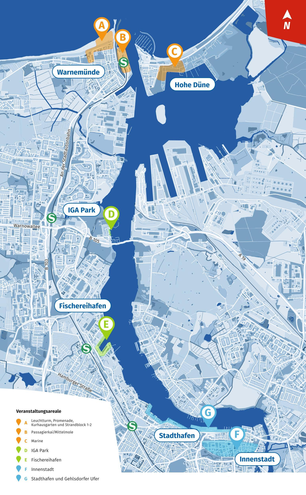

From the Editor
Joni Hammar
Written
30.9.2024
Reading time
5 min
Hanse Sail Rostock
Image © TZRW / Herbert Böhm
After sailing onboard the Grossherzogin Elisabeth in the Tall Ships Races 2024, I arrive in Rostock with a bus from Poland. After the last comradely goodbye with our ship’s cook, Uwe I enter the city.The old cobblestone street declines slowly and I can already smell the salty water. Soon I find what I’m looking for: the harbor with lovely sailing ships. Here I feel like home.
Sailing
A sail ship arrives to Rostock with torn sails, many a brave ship follow. The mare opens the beer keg and announces the 33th Hanse Sail began.
The festival area starts from the city harbor and continues all the way up to Warnemünde's sand beaches, the fisher harbor, seafaring museum and the naval base Hohe Düne.

Map of the Hanse Sail Rostock 2024
Walking along the city's dock is something that I could do forever. Swimming through the crowd I head towards the ship Grossherzogin Elisabeth, that has come from Poland after finishing the last leg of The Tall Ship Races 2024. [Mariehamn Finland - Szczecin Poland] I go to greet my mate, Konstantin Meyer. Let’s ask the sailor: what is the sailing all about for him?Konstantin Meyer
“Basically in 2022 I started my nautical studies – that’s when I started sailing at all. Since then, I have been sailing in smaller boats and I’ve done a couple of 10-day sailing trips with Lissi. (The nickname of Grossherzogin Elisabeth.) So generally, not a lot."
"We have the seafaring theory in school that we can put in practice onboard Lissi. That is something remarkable about Elsfleth, not every nautical school has that."
"Sailing is different here than on a commercial vessel, but the knots are still important these days. As a cadet on a commercial ship the sailors have a prejudice about you: as a European you can’t do knots, and you don’t know how to paint or even do the rust chipping. As a part of my apprenticeship, I was working on a gas tanker for three months. I joined the Gaschem Atlantic in Brazil, and we went up the coast to USA then Mexico and then USA again. Our last voyage was to Dunkirk, France where I left. Then I spent a night in Lübeck and went onboard a small general cargo vessel for another three months."
Meyer onboard the Gaschem Atlantic.
"On Lissi you learn the knots, painting and rust chipping and you build a bridge towards the sailors making it easier to connect. Then they are more willing to show you things and it’s nice to be a bit more part of the crew with the experience you have gained sailing.”“I recommend the Tall Ship Races and sailing onboard Lissi. It’s going to be a hard start if you don’t speak German but even the nationals have to learn the many terms. You can learn a lot and it’s going to be a lot of fun. If you aren’t sure, give it a try. It’s not too expensive. Maybe just for a weekend trip and then you already can get a feeling if it is for you. If it is, you can join a club so it doesn’t cost anything and you can create a new passion. “
Meeting the ship’s captain, Nils Karsten.
“Usually, I’m working in a cruise ship doing cruises as a chief officer on deck and navigation. I sail the Grossherzogin Elisabeth one to four times per year, because I’m also very active on another museum ship in Cuxhaven. This takes also a lot of time and of course I have to also be a little at home, while I’m already three months away from home because of my job.”
The captain also had a startup in Finland – in the partner land of the Hanse Sail 2024:
“I did the startup of the new Mein Schiff 1 and the new Mein Schiff 2 from the Turku shipyard in 2018 and 2019. Now this year they are just going to deliver Mein Schiff 7 also from Turku.
"We did the delivery and the commissioning. We went there to do the inspections of the vessel and checked that everything was according to the contract. If it wasn’t the shipyard had to follow up and when they did, we signed.”
Captain Nils Karsten and Joni Hammar onboard the Grossherzogin Elisabeth.
“Basically, I inspected the marine department but not any passenger cabins. However, the outside areas are a part of the deck department, so we inspected all the balconies for example. It’s also a hell of a work in -20°C in the wintertime – I don’t need to tell you.” (warm laughter)
Up's and down's of being a chief officer
“The up is of course the responsibility, but you also have some freedom deciding what you can do with your work and how you arrange your working time. Except the watches. For example, I did now three and a half months of twelve to four watch. (working from 00-04 & 12-16) In the end, you’re just tired of course when you really can’t sleep properly. You have the time to adjust but there’s always something going on during the day where you can not sleep your six hours. “
Message to the young about becoming a naval officer
“I think sailing in general on cargo vessels has nothing to do with old romantic stuff which you can read about long shore leaves and other stuff. Usually, the shorley in cargo vessels is very restricted and the ports are very far outside [the cities] and there’s not really a chance to go outside. On cruise ships you have the chance to go because you don’t have cargo operations that you need to observe."
“I still like to sail and what I would always recommend if somebody wanted to sail is, that they need to have passion for it in order also to grow by themselves. I would not be able to handle a ship like Lissi, unless I had put some effort in it and in the traditional way of sailing. This also helps very much for understanding the maneuvering of the modern vessels."
What makes Hanse Sail remarkable, is to witness the great tall ships as they once again sail to the port. To meet the men and women who sail the ships and enjoy the hospitality of the locals of Rostock.
In the bar the locals buy us many rounds making it hard to keep up. They the tell me the best off-sight attractions of the 13th century Hanse city which keeps me occupied for two whole days. The locals save my behind as my groceries fall in the pavement and the warm spirit just echoes from the man selling me a bratwurst. Pleasant people I must say.
Useful vocabulary [Ger - Fin]
- Moin! – Moi!
- Ich hätte ein grosses Fassbier – Yksi kylmä huurteinen
- Danke – Kiitos
- Bitte – Ole hyvä
- Prost! – Kippis!
- Ja / Nein – Joo / Ei
Highlights of Hanse Sail
- Warnemündes great sandcoasts with their massive beach partys
- Over 200 performers on stage
- Over 100 sailing ships from 1800’s till this day open and free to visit
- Sail onboard as passenger, crew or just overnight in a ship
- The nightlife and many pubs of Rostock
Specialities
- Smoker friendly city & bars
- Evident sailor spirit
- Hanse City form the 1200’s
- Pleasant coffee shops
- Affordable prices
- Stress free public transport – Bus & train tickets for the entire city are included in the city tax
- Partys till until morning
- Lots of street art
Later I’m privileged to meet commander Robert Lehmann of the Hohe Hüne naval base. How did it the officer’s career begin with him?
Commander Robert Lehmann
“At first, I enlisted as a petty officer after conscription, so I was based on small ships and working as a U-man for roughly four years. After that I decided to attend officer candidate school and become real navy officer."
Commander Lehmann and Joni Hammar at the press conference in Rostock.
"My first appointment was as a watch officer of an auxiliary ship. I chose this career path because it was quite a big ship with a small crew which I like because there it’s more familiar with each other."
"To become a commanding officer, you have to attend all the postings from the third,- the second,- to the first officer. After exam and test, you get the permission to work as a commanding officer. After mine I was for four years the commanding officer of an auxiliary ship."
"After this time, I got to know posting here in a naval base officer because all the naval base officers have a profession in logistics. That is why the link between the auxiliary ship and the commanding officer. In three months from now I will switch the working place to Berlin where I will work in a HQ and work as an operations officer.”
The up's and down's of working as a commander
“The ups are working with different people from different professions. Working as a team is always a good idea and I couldn’t work alone. Teamwork finds new challenges and passes these as a team. I think that is really interesting and that is why I chose this path."
"The downs are always if you have to send bad news to your crew, to your soldiers, to your solemates for example if something is going wrong and everything doesn’t work in a perfect manner. So, you always have to train."
"[The downs are] Even the hard times when you’re deployed roughly six to seven months away from family. But if you do it as a team, it is a little bit easier to pass these tests.“
Holidays:
“Normally you get some two to four weeks holiday. Afterwards you go back to the ship and start all over again with training and receiving new crewmembers and then you go back to another deployment. So normally you have a couple of weeks to go back to your family and get some downtime. “
Message for young people considering a career in the marines
“I think it’s a good job and a safe job. Especially if you like to search and look for challenges - I think working in a military is always a challenge for you and your family - and if you would like to attend these tests and attend friendship of comrades. I think the good things are a lot more than the bad things.“
Now the waves are bashing on the Warnemünde’s sand coasts. A lighthouse sweeps over the black sea. The stars are shining and the last twilight fades into the open sea.
This was Hanse Sail Rostock as I experienced it. Thank you.
Grossherzogin Elisabeth in the Rostock harbor.
Read also
The full interview of commander Lehmann and the story of Groch Fock
Interviewing commander Lehmann-